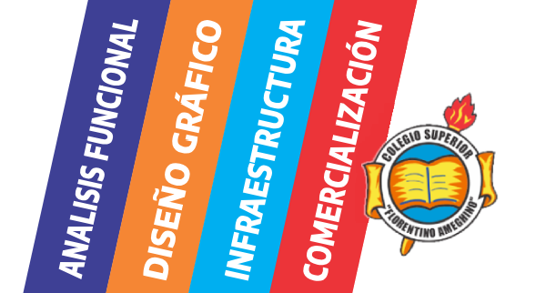

Tecnicaturas
Superiores en el
Terciario del NACIO
¡Tú FUTURO esta acá!
Te estamos esperando
Cañada de Gómez
Técnico Superior
Análisis Funcional deSistemas Informáticos
Técnico Superior
Diseño Gráfico y Publicitario